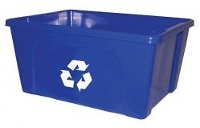
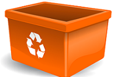

Recycling has become a part of everyday life in Alachua County. More than 50% of residents recycle, and people believe that its their obligation to recycle to help the planet. This site provides you with information about recycling in Alachua County, a fun quiz to test your knowledge about what you can recycle and an engaging way to learn how you're helping the planet and what else you can recycle. Take a look. Explore! And recycle!
Click Me to Scroll Down!Take a look at the charts in the next section. As you can see from the first chart, recycling in Alachua County has increased over time, a positive trend. The increase does not seem to be slowing down or stopping which is another good thing. Perhaps, one day it will long surpass landfill waste. Actually, that is the goal of Alachua County. In 2010, Alachua County's solid waste management created a plan to recycle 75% of all waste by 2020. Their goal for 2014 has been met and surpassed, with them recycling 58% of all waste. As you can see from the second chart, you have a lot of options for what you can recycle, but where can you recycle and what specifically can you recycle? We'll take a look into that on this website.
Statistics found at the Florida Department of Environmental Protection website.
In this part of the website, you can take a quiz to see how well you know what to recycle and how much you can save with what you recycle. Good luck, and happy savings!
So, you've taken the quiz and seen what can happen when you recycle. The next step would be to learn what and how you can recycle. First we'll go into a few recycling tips. Then, click on a bin to learn about what you can recycle in it.
Click on the bin to learn what you can recycle in it!
 